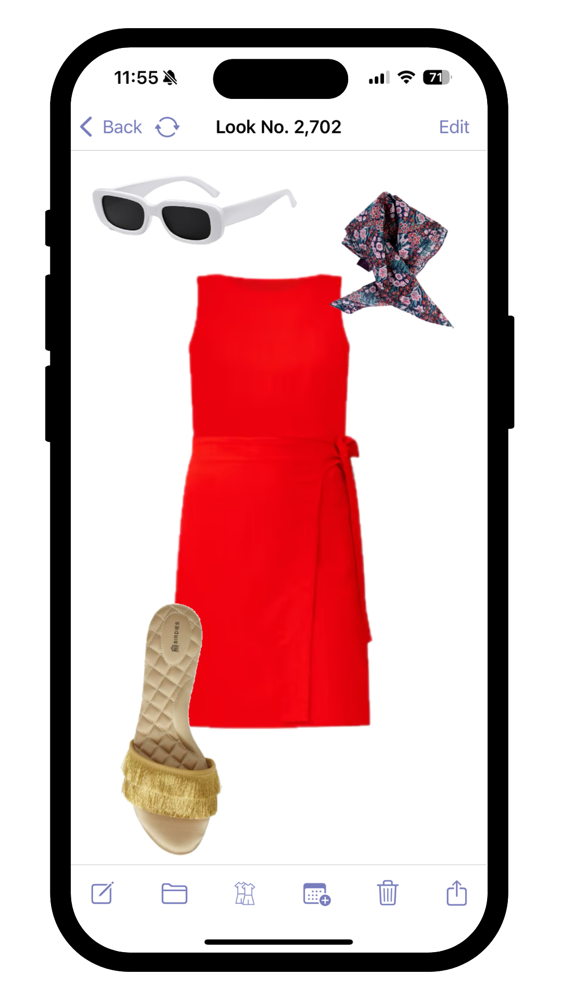
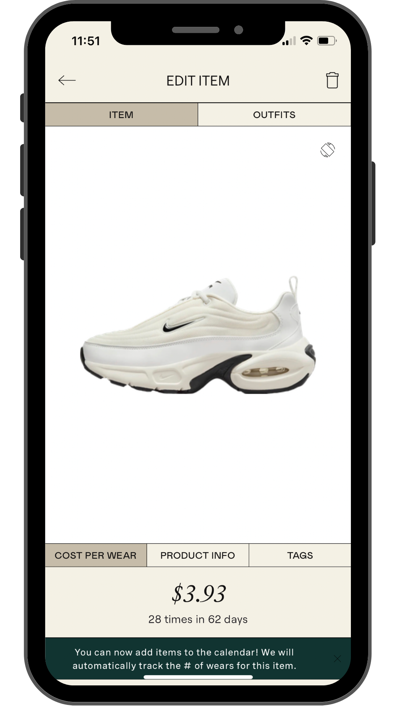
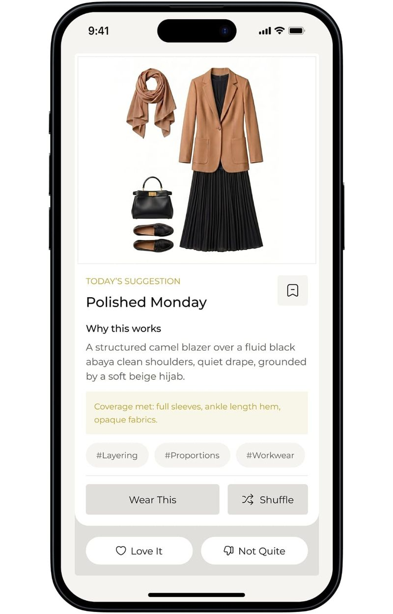
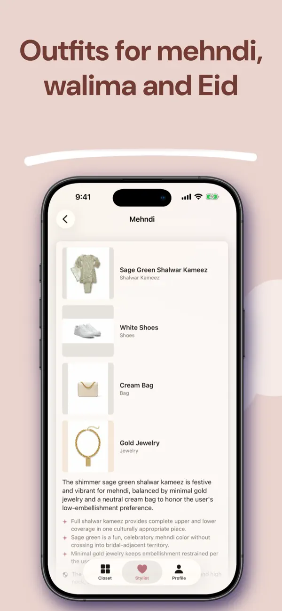
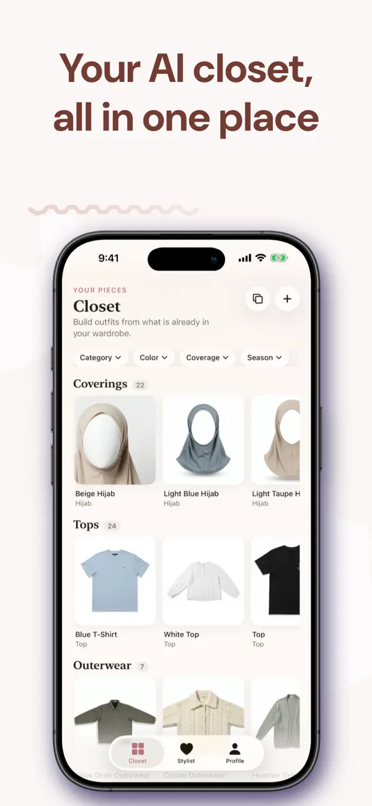

Stylebook
The outfit takes the space


Large garment images make the whole combination easy to inspect. Our interpretation: keep this visual emphasis, with clearer labels for frequent actions.
Publisher features and image ↗Four visual references from a seven-product review. Publisher images and documented interactions inform the next study. Styling quality has not been tested in the installed apps.
The outfit takes the space

Large garment images make the whole combination easy to inspect. Our interpretation: keep this visual emphasis, with clearer labels for frequent actions.
Publisher features and image ↗A piece leads to its looks

The Outfits tab connects a garment to saved combinations. Our interpretation: make this an obvious route from a favorite piece.
Publisher tutorial and image ↗Explain the suggestion

The result pairs clothes with a styling reason and coverage summary. Our interpretation: keep useful explanations short and grounded in known attributes.
Publisher website and image ↗Name the cultural occasion

The occasion result uses a garment list and reasoning. Our interpretation: a full collage would help her compare hijabs against the complete look.
Publisher App Store listing ↗Whering documents pinning during shuffle. Apply the same visible control to our outfit flow. Pinning instructions ↗
Acloset documents recommendations for selected empty categories. This is a useful model for finding a hijab. Category recommendations ↗
Alta presents daily and occasion styling. Keep our occasion and optional mood close to the outfit. Occasion styling ↗
Carry forward Direction A. Show relevant saved looks for her day, keep the full outfit visible during hijab comparison, and allow one-piece changes. Treat event dressiness as a contextual conversation. These are proposals to explore in the next mockups.
